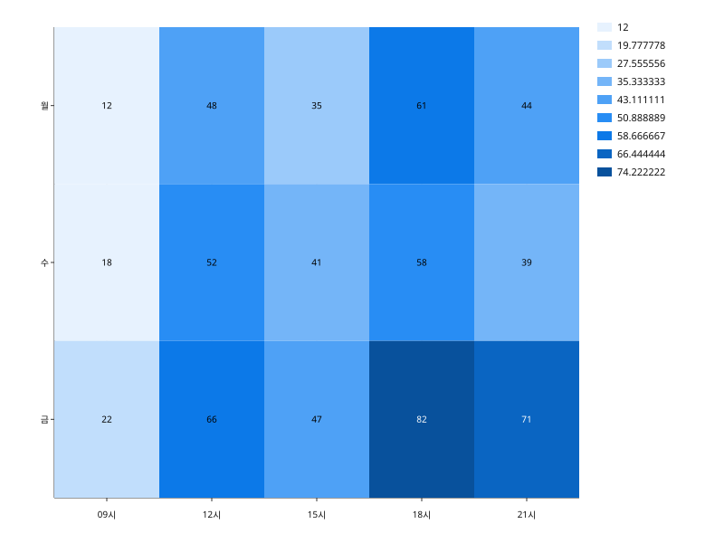

행·열 카테고리가 만드는 격자에서 값을 색으로 나타낸다. 색은 9단계로 양자화된다.
import svgplot as sp
_hours = ["09시", "12시", "15시", "18시", "21시"]
_days = ["월", "수", "금"]
_load = [
[12.0, 48.0, 35.0, 61.0, 44.0],
[18.0, 52.0, 41.0, 58.0, 39.0],
[22.0, 66.0, 47.0, 82.0, 71.0],
]
TRAFFIC = {
"시간": [hour for _ in _days for hour in _hours],
"요일": [day for day in _days for _ in _hours],
"요청": [value for row in _load for value in row],
}sp.heatmap(TRAFFIC, x="시간", y="요일", values="요청")
sp.heatmap(TRAFFIC, x="시간", y="요일", values="요청", annot=True)DIFF = {
"시간": TRAFFIC["시간"],
"요일": TRAFFIC["요일"],
"증감": [value - 45.0 for value in TRAFFIC["요청"]],
}
sp.heatmap(DIFF, x="시간", y="요일", values="증감", cmap="coolwarm", center=0.0, annot=True)